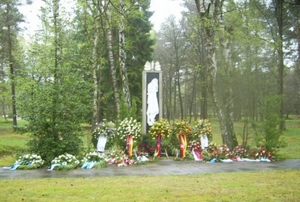

СОЛДАТЫ ВОЗВРАЩАЮТСЯ, НО ТОЛЬКО НЕ ЖИВЫЕ, А ГРАНИТНЫЕ
С 2007 г. Народный союз Германии по уходу за воинскими захоронениями и Центр документалистики лагеря военнопленных Берген - Бельзен (шталаг 311 С, с февраля 1944 г. - концентрационный лагерь) реализуют проект для школ Германии «Мы пишем ваши имена». Суть этого проекта заключается в том, что немецкие школьники берут сведения о советских военнопленных, погибших в этом лагере, из архива в Подольске, и каждый ребенок изготавливает из мастики табличку размером с кирпич. Пока мастика мягкая на ней пишется имя солдата и даты его жизни. Потом «кирпичи» закаляют в печи и устанавливают на земляном валу кладбища военнопленных Хёрстен (Нижняя Саксония). Четырнадцать школ Германии за время реализации проекта приняли в нем участие, написав имена более 700 русских солдат.
Само кладбище - это большая территория с деревьями, небольшим валом и четырьмя большими прямоугольниками, засаженные вереском. У входа стоит камень, на котором написано, что здесь в братских могилах лежат 50 000 умерших советских военнопленных и надпись: "Спите спокойно, дорогие братья".
Активное участие в этом проекте принимают учащиеся средней школы № 7 г. Мичуринска, которые уже разыскали родственников девятнадцати погибших в лагере уроженцев Тамбовской области. Директор этой школы Е. Рыбальченко обратилась к нам с предложением попытаться разыскать родственников наших земляков, погибших в лагере.
Ниже мы публикуем сведения о двадцати одном воине-калининце, похороненном на кладбище военнопленных Хёрстен лагеря Берген-Бельзен. Ни один из них не увековечен в Книге памяти как погибший в плену. Одиннадцать человек - пропавшие без вести, имен десяти погибших в Книге памяти вообще нет.
1. АВЕРЬЯНОВ Петр Федорович род. 27 января 1939 г. в дер. Лаврово Есиновичского р-на Калининской области. Мать Аверьянова Т.В. Призван Есиновичским РВК в 1939 г. Погиб в лагере 17 октября 1941 г. Увековечен в Книге памяти Тверской области как пропавший без вести в мае 1943 г.
2. БЕЛОВ Иван род. 17 сентября 1906 г. Мать Белова Мария Васильевна проживала в дер. Кошелево Осташковского р-на Калининской области. Погиб в лагере 15 октября 1941 г. В Книге памяти Тверской области не увековечен.
3. ХАЙЛОВ Егор Акимович род. 23 апреля 1907 г. в дер. Десятильники Рамешковского р-на Калининской области. Жена Анна Константиновна, дер. Трояново Бурашевского с/с Калининского р-на. Призван Калининским РВК 14 июня 1941 г. Рядовой, 11 арт. полк. Попал в плен 25 июля 1941 г. Погиб в лагере 11 ноября 1941 г. В Книге памяти Тверской области не увековечен.
4. ФЕДОРОВ Иван Лаврентьевич род. 20 февраля 1921 г. в дер. Рамешки Молоковского р-на Калининской области. Мать Прасковья Васильевна. Призван Молоковским РВК в ноябре 1940 г. Погиб в лагере 18 октября 1941 г. Увековечен в Книге памяти Тверской области как пропавший без вести в мае 1943 г.
5. ИНДЮШКИН Петр Николаевич род. 23 июня 1919 г. в дер. Деревенька Калязинского р-на Калининской области. Рядовой, 345 стрелковый полк. Попал в плен 25 июня 1941 г. в Белоруссии. Погиб в лагере 20 декабря 1941 г. В документах ЦАМО РФ не учтен. В Книге памяти Тверской области не увековечен.
6. ИСАКОВ Федор род. 20 сентября 1921 г. в дер. Галибицы Куньевского с/с Плоскошского (Торопецкого) р-на Калининской области. Мать Исакова Анастасия. Погиб в лагере 15 октября 1941 г. В документах ЦАМО РФ не учтен. В Книге памяти Тверской области не увековечен.
7. КОМКОВ Константин Иванович род. 15 июля 1920 г. в дер. Вологино Калининского р-на Калининской области. Адрес для переписки: г. Калинин, Нобелевский пер., д. 4, кв.2. Лейтенант, 47 стрелковый полк. Попал в плен 15 июля 1942 г. под г. Валуйки Белгородской области. Погиб в лагере 5 июня 1944 г. В документах ЦАМО РФ не учтен. В Книге памяти Тверской области не увековечен.
8. КОРОЛЕВ Николай Сергеевич род. в 1921 г. в дер. дер. Горнешница Березайского сельсовета Бологовского р-на Калининской области. Рядовой раб. батальона. Попал в плен в июле 1941 г. в Литве. Погиб в лагере 6 декабря 1941 г. В Книге памяти Тверской области увековечен как пропавший без вести в июле 1942 г.
9. КРОПИН Михаил Николаевич род. 18 декабря 1912 г. в г. Калинин. Жена Александра Никаноровна, г. Калинин, Новопромышленный р-н, Резинстрой, д. 32/64, кв. 10. Рядовой, 164 стрелковый полк. Погиб в лагере 24 января 1942 г. В Книге памяти Тверской области не увековечен.
10. ЛЕБЕДЕВ Алексей Егорович род. 25 декабря 1921 г. в дер. Тивиково Пеновского р-на Калининской области. Погиб в лагере 6 мая 1944 г. В Книге памяти Тверской области не увековечен.
11. МАМОНТОВ Николай Николаевич род. в сентябре 1920 г. в дер. Филистово Сухошинского сельсовета Кировского (Селижаровского) р-на Калининской области. Мать Анна Климовна. Призван Кировским РВК 20 октября 1939 г. Рядовой, 33 мех. полк, 66 БТД. Погиб в лагере 26 октября 1941 г. В Книге памяти Тверской области увековечен как пропавший без вести в декабре 1942 г.
12. МАТЮНИН Николай Алексеевич род. 18 августа 1921 г. в дер. Гостерачки Обросовского сельсовета Молоковского р-на калининской области. Отец Алексей Матвеевич. Погиб в лагере 12 октября 1941 г. В Книге памяти Тверской области не увековечен.
13. ПЕТРОВ Сергей Иванович род. в 1920 г. в дер. Исачиха Январского сельсовета Рамешковского р-на Калининской области. Призван в 1940. Рядовой, 71 стрелковая дивизия. Погиб в лагере 28 октября 1941 г. В Книге памяти Тверской области увековечен как пропавший без вести в июле 1941 г.
14. РУСКОВ Дмитрий род. 16 июня 1920 г. в дер. Тросухино Спасского сельсовета Кашинского р-на Калининской области. Мать Ольга Васильевна. Погиб в лагере 13 октября 1941 г. В Книге памяти Тверской области не увековечен.
15. ШКАЛИКОВ Василий Иванович род. в 1918 г. в дер. Хорошево Бабинского сельсовета Старицкого р-на Калининской области. Мать Пелагея Федоровна. Рядовой, п/я 132. Погиб в лагере 19 октября 1941 г. В Книге памяти Тверской области увековечен как пропавший без вести в июле 1941 г.
16. СКОБЕЛЕВ Дмитрий Михайлович род. 25 сентября 1907 г. в дер. Малое Лохово Волжского сельсовета Калининской области. Жена Александра Федоровна. Призван 13 июня 1941 г. Пеновским РВК. Погиб в лагере 12 октября 1941 г. В Книге памяти Тверской области увековечен как пропавший без вести в апреле 1942 г.
17. СОЛОВЬЕВ Виктор Егорович род. 24 декабря 1918 г. в дер. Высокуша Краснохолмского р-на Калининской области. Жена Вера Павловна. Призван в 1940 г. Краснохолмским РВК. Погиб в лагере 11 октября 1941 г. В Книге памяти Тверской области увековечен как пропавший без вести в октябре 1944 г.
18. СУДАКОВ Александр Петрович род. 19 октября 1919 г. в дер. Медведково Лесного р-на Калининской области. Жена Василиса Фирсовна. Погиб в лагере 18 октября 1941 г. В Книге памяти Тверской области увековечен как пропавший без вести в 1941 г.
19. ТРИФОНОВ Иван Егорович род. в 1917 г. в дер. Доронино Князевского сельсовета Удомельского р-на Калининской области. Погиб в лагере 18 октября 1941 г. В Книге памяти Тверской области увековечен как пропавший без вести в феврале 1942 г.
20. ВОЛКОВ Владимир Дмитриевич род. 8 мая 1921 г., г. Калинин, Пролетарский р-н, ул. Бабичева, 38. Рядовой, 90 стрелковая дивизия. Погиб в лагере 20 декабря 1941 г. В Книге памяти Тверской области увековечен как пропавший без вести в сентябре 1941 г.
21. ЦАРЬКОВ Иван род. 25 мая 1918 г. в дер. Макариха Беляницкого сельсовета Сонковского р-на Калининской области. Мать Агафья. Погиб в лагере 16 октября 1941 г. В Книге памяти Тверской области не увековечен.
На фотографии: памятник погибшим в лагере Берген – Бельзен.
ОБРАЩАЕМСЯ КО ВСЕМ ЖИТЕЛЯМ ТВЕРСКОЙ ОБЛАСТИ С ПРОСЬБОЙ ПОМОЧЬ УСТАНОВИТЬ РОДСТВЕННИКОВ ЭТИХ ПОГИБШИХ ВОИНОВ. |